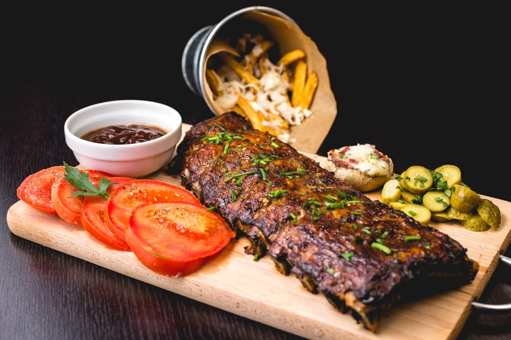
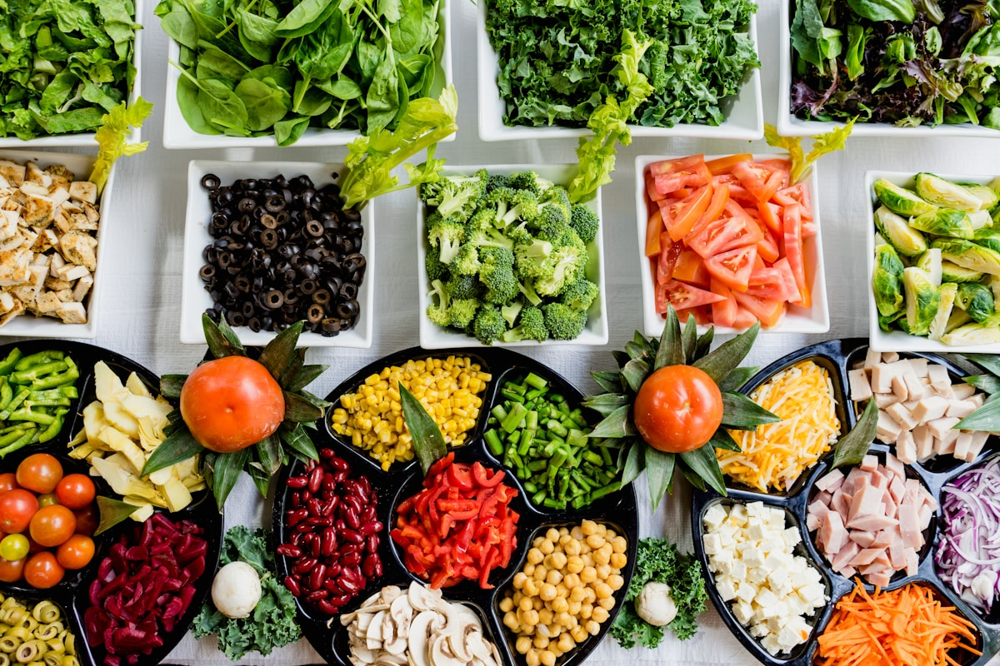
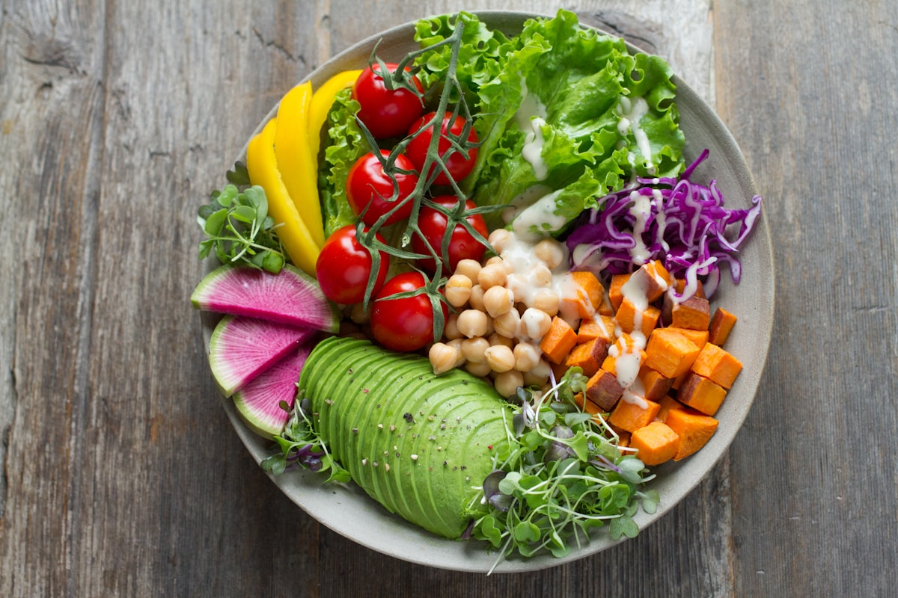
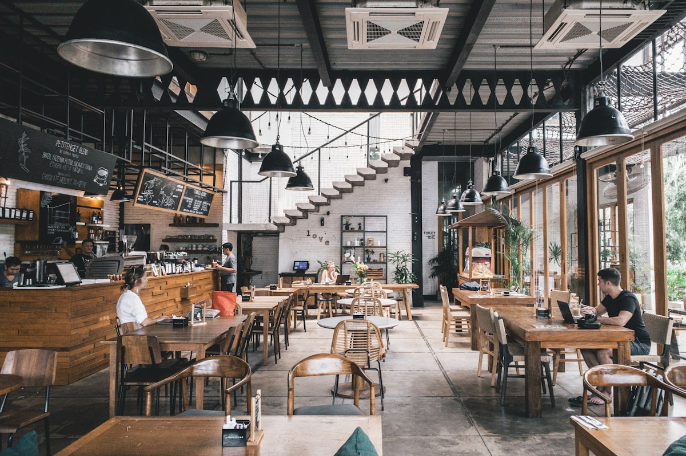
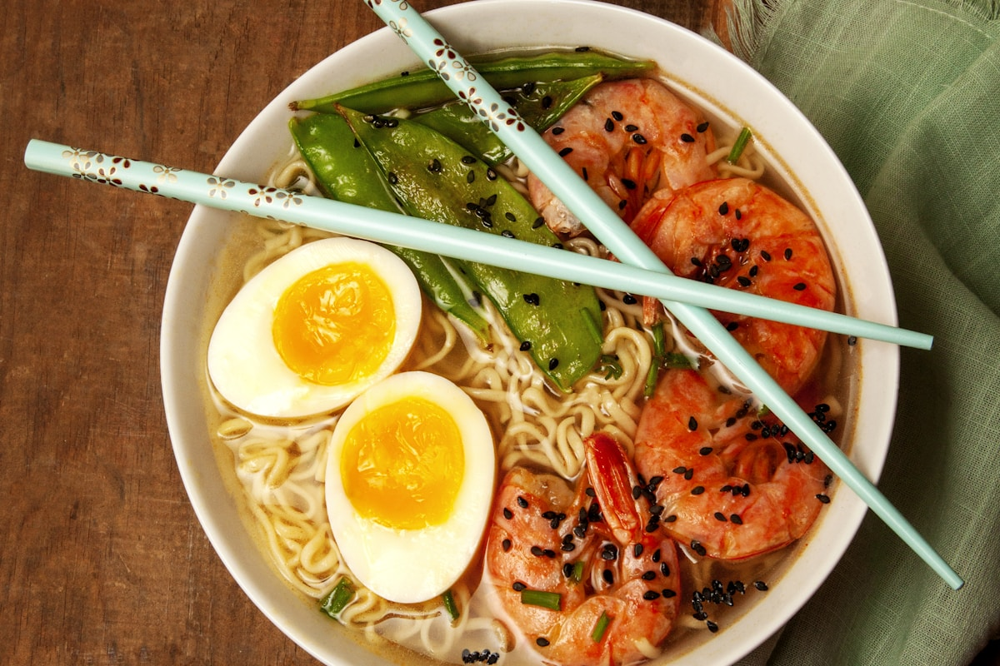
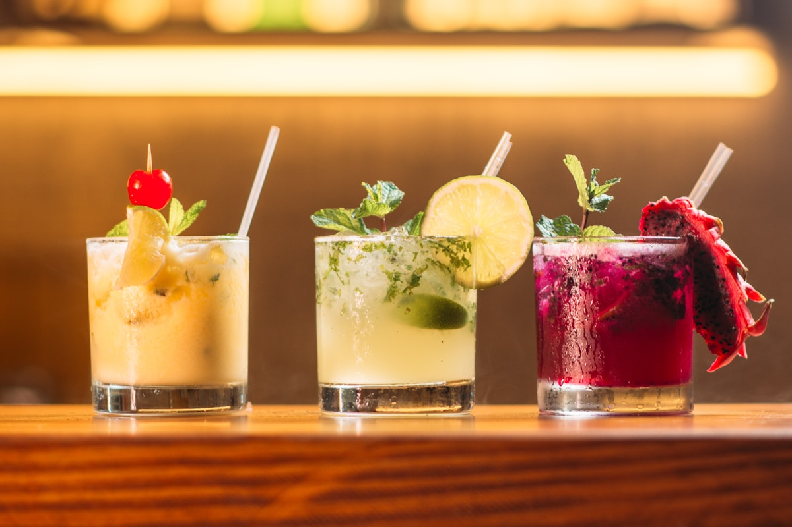

Where Evenings Unfold Into Warm Hearth Feasts
CozyMealCove is dedicated to the timeless ritual of slow evening dining. From cast-iron braised heritage roasts and hand-rolled semolina tagliatelle to velvet butternut bisques and golden skillet crisps, we transform nighttime cooking into restorative, candlelit gatherings that nourish the spirit and ground the senses after a demanding day.
Step away from hurried takeout, microwave shortcuts, and digital distractions. Embrace heavy thermal cookware, gentle wood-fire reductions, whole heirloom grains, and the calming presence of shared supper tables illuminated by soft beeswax candlelight. We believe that dinner is not merely caloric refueling; it is the emotional center of the home.

The Four Pillars of Evening Comfort Cooking
Every meal prepared at CozyMealCove is designed around the calming psychology of evening nourishment, heavy thermal cookware, and deep savory reduction.
Thermal Retention Vessels
We cook in heavy enameled cast iron and stoneware Dutch ovens that store and radiate gentle, even heat, gently breaking down tough connective collagen into succulent gelatin over multi-hour braises while preventing scorch spots. The heavy lids create a self-basting cycle that keeps meats moist throughout.
Heritage Whole Grains
From stone-milled organic durum wheat for fresh pasta to nutty heirloom farro medio, wild black rice, and stone-ground flint corn polenta, our dinners anchor on nutrient-dense complex carbohydrates that provide grounding, restful satiety and support natural evening melatonin production.
Woodland Herb Aromatics
Mountain rosemary, winter savory, broadleaf sage, and fresh thyme sprigs are bruised in golden clarified butter or cold-pressed olive oil to infuse volatile essential oils deep into our slow-simmered sauces and reductions, creating layered sensory warmth throughout the home.
Ambient Table Culture
Dinner is more than sustenance—it is a sensory sanctuary. We advocate for warm amber lighting, hand-thrown ceramic bowls, linen napkins, acoustic calming, and communal serving platters passed from hand to hand to cultivate presence and connection.
Master Dinner Menus for Cold & Crisp Evenings
Carefully balanced multi-component suppers that bring restaurant-quality comfort to the intimate home dining table.

Dutch Oven Braised Beef Chuck & Winter Roots
Thick-cut grass-fed chuck seared deeply in rendered beef tallow, then slow-braised with sweet thumbelina carrots, pearl onions, garlic cloves, and apple cider broth. Served over creamy mascarpone polenta with reduced rosemary glaze. The meat unknots into tender flakes while the vegetables remain sweet and velvety.

Handcrafted Tagliatelle with 6-Hour Herb Ragù
Fresh golden egg noodles hand-rolled to silky perfection, tossed in a slow-simmered triple-meat ragù enriched with cultured whole milk, San Marzano plum tomatoes, and fresh garden rosemary. Emulsified tableside with starchy pasta water and aged Parmigiano Reggiano for a glossy, clinging culinary emulsion.

Cast-Iron Crisp Thighs with Melted Leeks
Pasture-raised poultry thighs crisped skin-down in heavy iron until crackling and golden, finished over sweet butter-braised leeks, roasted fingerling potatoes, and garlic herb pan jus with a splash of aged cider vinegar. One-pan simplicity paired with extraordinary textural crispness and melting tenderness.
The Thermal Chemistry of Evening Satiety
Why does a hot bowl of slow-braised stew or freshly extruded pasta feel uniquely grounding after a strenuous day? The answer lies in the intersection of organic chemistry, thermal heat conduction, and neurological comfort signals.
Collagen Hydrolysis at 160°F - 180°F
When tough connective tissues in cuts like shank, brisket, or chuck are simmered gently below the boil, rigid triple-helix collagen fibers unravel into liquid gelatin, coating the palate with rich, velvety mouthfeel without heavy greasiness.
The Maillard Reaction & Fond Deglazing
High-heat surface searing triggers amino acid and reducing sugar rearrangement, developing over 600 complex aromatic compounds. Deglazing the resulting fond with rich cider and bone broth forms the savory cornerstone of evening pan sauces.
Starch Gelatinization & Serotonin Response
Slow-simmered whole grains and handmade pastas provide a sustained release of complex carbohydrates, stimulating gradual insulin regulation and supporting evening melatonin production for peaceful sleep.
By coordinating these three biochemical mechanisms, our dinners satisfy appetite on a cellular level, eliminating late-night cravings and fostering deep physical tranquility.

Explore Our Evening Dining Categories
From vibrant plant-forward harvest bowls to wood-fired skillet suppers, find inspiration for every evening of the week.

Harvest Root Bowls
Maple-roasted acorn squash, caramelized parsnips, golden beets, ancient farro pilaf, and toasted pumpkin seed crumbles tossed in warm cider mustard emulsion.

Velvet Bisques & Broths
Roasted honeynut squash bisques, charred leek velouté, and 24-hour marrow potages paired with warm rustic sourdough and whipped cultured herb butter.

Hearth Skillet Flatbreads
High-hydration sourdough doughs blistered in cast iron with confit garlic, wild forest mushrooms, fresh thyme, and aged goat curd drizzled with raw honey.

Savory Night Broth Bowls
Hand-pulled semolina noodles immersed in rich shiitake ginger dashi with simmered winter greens, soft-boiled farm eggs, and toasted sesame crunch.
Evening Feast & Ingredient Proportion Calculator
Plan your family supper or weekend dinner gathering with precise ingredient ratios, prep timelines, and cooking vessel sizes.
Your Evening Feast Blueprint
- Primary Protein / Main: ~3.0 lbs chuck roast or heritage cut
- Aromatics & Mirepoix: 450g yellow onions, carrots & celery
- Braising Broth / Liquid: 4.5 cups rich roasted stock
- Starch / Grain Base: 375g stone-ground polenta with mascarpone
- Recommended Vessel: 7-Quart Cast Iron Dutch Oven
- Estimated Hearth Time: 4.5 Hours total (45 min prep)
The Five-Phase Ritual of a Perfect Dutch Oven Dinner
Follow our verified kitchen workflow for succulent meats, deeply caramelized sauces, and tender vegetables that never turn mushy.
Pre-Sear Dry Brine
Salt your meat heavily 12 hours prior to draw surface moisture out and dissolve seasoning deep into muscle tissues for maximum flavor retention.
Aggressive Fond Development
Sear over medium-high heat in heavy cast iron until a mahogany crust forms on all surfaces. Never crowd the pan to avoid steaming.
Aromatic Sweat & Deglaze
Remove protein and soften mirepoix in the rendered drippings. Splash cider or bone stock to scrape up every caramelized bit of fond.
Low & Slow Oven Braise
Submerge meat halfway in simmering liquid. Cover tightly with heavy lid and transfer to a 300°F oven for 3 to 4 hours undisturbed.
Glaze & Rest Reduction
Rest meat for 20 minutes while skimming pan liquid. Simmer juices on stovetop until reduced to a glossy, spoon-coating culinary glaze.

Curating the Sanctuary of the Candlelit Table
The psychological transition from the frantic pace of the day into restful evening restorative calm begins before the first bite. The visual and acoustic environment of your dining table directly impacts digestion, parasympathetic activation, and conversational warmth.
Sub-2700K Warm Spectrum Illumination
Extinguish overhead fluorescent fixtures and rely on beeswax tapers or low-lumen amber filament bulbs to encourage melatonin synthesis and soften facial contours around the dinner table.
Tactile Ceramic Earthenware
Heavy, hand-thrown clay bowls and matte glazes retain food temperature longer and provide a tactile, grounded connection to the physical act of eating.
Acoustic Calming & Analog Resonance
Soft acoustic folk, solo piano, or the quiet crackle of a wood-burning hearth quiets internal anxiety, allowing dinner companions to speak without straining.
The CozyMealCove Evening Pantry Checklist
Stock your larder with these essential staple ingredients to ensure you can assemble a comforting dinner on any evening.
🍯 Spices, Syrups & Seasonings
- Raw Mountain Wildflower Honey & Dark Maple Syrup
- Smoked Flake Sea Salt & Whole Tellicherry Peppercorns
- Dried Juniper Berries, Whole Allspice & Ceylon Cinnamon
- Organic Apple Cider Vinegar & Verjuice Acid Reductions
- Aged Parmigiano Reggiano & Pecorino Romano Rinds
🥘 Heavy Kitchen Cookware Essentials
- 7-Quart Enameled Cast-Iron Dutch Oven for Slow Braises
- 12-Inch Pre-Seasoned Heavy Cast-Iron Skillet for Roasts
- Unglazed Earthenware Clay Pot / Moroccan Tagine
- Hand-Carved Wooden Pasta Pastry Board (Spianatoia)
- Long Beechwood Rolling Pin (Mattarello) for Tagliatelle
🕯️ Ambient Tablescape Elements
- Pure Mountain Beeswax Taper Candles (Sub-2200K Warmth)
- Hand-Washed Flax Linen Tablecloths & Rustic Cloth Napkins
- Heavy Hand-Thrown Stoneware Ceramic Bowls & Platters
- Thin-Rimmed Crystal Stemware for Sparkling Ciders
- Cast-Iron Heat-Resistant Trivets for Table Serving
🧄 Aromatics & Alliums
- French Gray Shallots & Sweet Yellow Onions
- Hardneck Porcelain Garlic Bulbs
- Fresh Ginger Root & Whole Turmeric
- Broadleaf Sage, Rosemary & Winter Thyme
- Spanish Bay Leaves & Whole Nutmeg
🌾 Grains & Flours
- Organic Italian Durum Semolina Wheat
- Stone-Ground Coarse Yellow Corn Polenta
- Heirloom Farro Medio & Wild Black Rice
- Unbleached Bread Flour for Sourdough
- Rolled Oats & Spelt for Crisps
🫒 Fats, Acids & Broths
- Slow-Simmered Beef & Poultry Bone Broth
- Cultured Sweet Cream Butter & Beef Tallow
- Single-Estate Cold Pressed Extra Virgin Olive Oil
- Aged Apple Cider Vinegar & Verjuice
- Parmigiano Reggiano Rinds for Simmering
The CozyMealCove Supper Club Movement
In an era dominated by isolated screen time and hurried solo meals, our Supper Club initiative revives the communal hearth tradition. We bring together neighbors, friends, and home cooks to share expansive multi-course dinners where slow food creates deep human connection.
Whether gathering six guests around a shared fondue pot or hosting a twelve-person holiday feast, our dinner guides provide complete prep schedules, tablescape inspiration, and scaling guides so the host spends the evening seated with guests rather than trapped at the stove.
Our supper club host blueprints outline make-ahead strategies: braises that taste even better when rested 24 hours in advance, salad dressings shaken into mason jars, and rustic skillet crisps assembled ahead and baked during dinner so the home fills with warm cinnamon fragrance as main courses conclude.

Finishing the Night: Skillet Crisps & Warm Cordials
Conclude your evening meal with gently spiced, rustic skillet desserts and restorative botanical infusions that encourage restful slumber.

Cast-Iron Honey Pear & Apple Crisp
Thinly sliced heirloom apples and d'Anjou pears tossed in raw wildflower honey, ground cinnamon, and cardamom, baked under a toasted oat and brown butter streusel until bubbling and golden. Served warm from the skillet with sweet cream.

Sparkling Botanical & Herb Shrub Cordials
Sophisticated evening beverages crafted from cold-macerated mountain blackberries, rosemary-infused apple cider vinegar, and sparkling spring water that provide crisp, palate-cleansing refreshment without intoxicating effects.
Frequently Asked Questions on Evening Dinners
Clear, chef-tested guidance to master slow-braising, fresh pasta, and dinner timing at home.
The best braising cuts are rich in connective tissue and intramuscular marbling. Beef chuck roast, bone-in short ribs, oxtails, pork shoulder, and bone-in chicken thighs yield the most tender, melt-in-the-mouth results when simmered gently at 300°F for 3 to 5 hours. The collagen dissolves into rich gelatin, creating natural tenderness and silky pan sauces.
Stagger your vegetable additions. Simmer aromatics like onions and celery from the beginning to build the sauce base, but add dense root vegetables like carrots, parsnips, and potatoes during the final 45 to 60 minutes of cooking so they become fork-tender without disintegrating into the broth.
Yes! Wrap the kneaded dough tightly in plastic wrap and rest it in the refrigerator for up to 24 hours. Bring it to room temperature for 30 minutes before rolling and extruding to ensure optimal gluten elasticity and effortless sheeting.
Cast iron has immense volumetric heat capacity. When you place a cold roast or poultry into hot cast iron, the pan temperature remains steady, producing a rich, deeply caramelized crust (fond) that forms the flavor cornerstone of your sauce—something non-stick pans cannot replicate.
Enameled cast iron Dutch ovens naturally retain serving heat for over 45 minutes on a trivet. Alternatively, keep the covered vessel in an oven set to 160°F with a splash of broth to prevent the surface from drying out while retaining perfect tenderness.
Always practice the mantecatura method. Transfer your al dente pasta into the skillet containing warm sauce over medium heat, add 1/2 cup of starchy pasta water and a tablespoon of cold butter, then toss vigorously. The starch and dairy fats emulsify into a creamy, glossy glaze that clings to every noodle.
Honeynut squash and Delicata squash are exceptional choices because their thin skins are completely edible when roasted, and their dense, non-stringy flesh caramelizes into a sweet, custardy texture. Kabocha and red Kuri squashes also deliver deep, chestnut-like flavor that pairs beautifully with earthy herbs and brown butter.
Wash the warm skillet with hot water and a stiff bristle brush. Use mild dish soap if necessary—modern dish soaps do not harm polymerized seasoning. Dry the pan thoroughly on the stovetop over low heat for 2 minutes, then rub a drop of high-smoke-point oil (like flaxseed or grapeseed) across the entire surface with a dry paper towel until no wet residue remains.
The CozyMealCove 10-Point Dinner Timeline
Stress-free hosting protocol for intimate weekend dinner gatherings.
Morning (9:00 AM): Trim and salt your braising protein. Place uncovered on a wire rack in the refrigerator for dry brining.
Afternoon (2:00 PM): Brown protein in heavy cast iron, sweat aromatics, deglaze with cider broth, and transfer covered Dutch oven to 300°F oven for a 4-hour gentle braise.
Late Afternoon (4:30 PM): Knead fresh durum semolina pasta dough or chop seasonal root vegetables. Set out ceramic serving platters and linen napkins.
Evening (6:00 PM): Remove braise from oven to rest. Reduce pan juices on stovetop into a glossy culinary glaze. Light beeswax taper candles and dim overhead room lighting.
Supper Seating (7:00 PM): Welcome guests with chilled sparkling craft cider cordials. Serve the steaming Dutch oven feast tableside and enjoy peaceful, unhurried evening conversation.